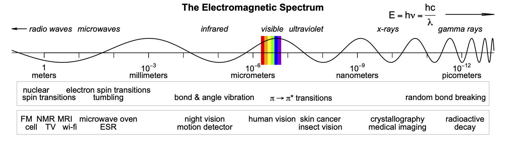

Spectroscopy Suite Update
R
ChemoSpec
ChemoSpec2D
ChemoSpecUtils
readJDX
Updates for the new version of R
My suite of spectroscopy R packages has been updated on CRAN. There are only a few small changes, but they will be important to some of you:
ChemoSpecUtilsnow provides a set of colorblind-friendly colors, see?colorSymbol. These are available for use inChemoSpecandChemoSpec2D.- At the request of several folks,
readJDXnow includes a function,splitMultiblockDX, that will split a multiblock JCAMP-DX file into separate files, which can then be imported via the usual functions in the package. - All packages are built against the upcoming R 4.1 release (due in April).
Here are the links to the documentation:
As always, let me know if you discover trouble or have questions.
Reuse
Citation
BibTeX citation:
@online{hanson2021,
author = {Bryan Hanson},
title = {Spectroscopy {Suite} {Update}},
date = {2021-03-27},
url = {http://chemospec.org/2021-03-27-Spec-Suite-update.html},
langid = {en}
}
For attribution, please cite this work as:
Bryan Hanson. 2021. “Spectroscopy Suite Update.” March 27,
2021. http://chemospec.org/2021-03-27-Spec-Suite-update.html.